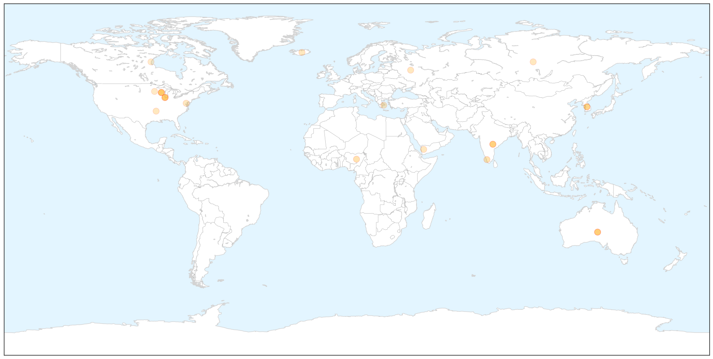
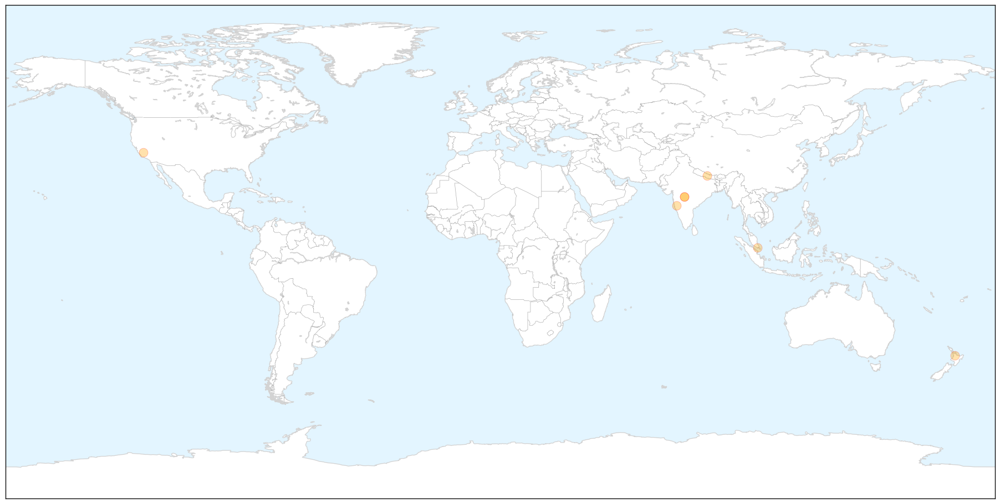
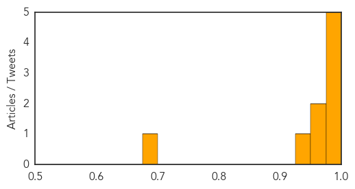

Influenza
30-Day Web Trend
0 alerts, 0 warnings

30-Day Twitter Trend
0 alerts, 0 warnings

Article Locations

X

Article Confidences

Top Articles:
- 0.999
- CDC dog flu statement, part 2
- 0.963
- Bird flu outbreak jolts Telangana
- 0.958
- Experts urge vaccinations after delay of influenza vaccine
- 0.953
- DATCP implementing a response
- 0.945
- Rapid diagnosis kit will take five minutes to test if you've really got the flu
- 0.932
- Bird flu outbreak jolts Telangana
- 0.912
- Bird Flu Escalates in Kano, Bauchi, Plateau, Articles
- 0.903
- Midwest dog-flu strain new to U.S., researchers say
- 0.845
- Dog Flu Epidemic Traced To Flu Strain In Asia, More Dangerous Than Initial Reports
- 0.803
- Bird Flu Alert in Telangana
- 0.775
- AI found in Wisconsin chicken flock
- 0.751
- April 13, 2015 Archives
- 0.751
- April 13, 2015 Archives
- 0.751
- April 13, 2015 Archives
- 0.751
- April 13, 2015 Archives
- 0.751
- April 13, 2015 Archives
- 0.739
- Bird flu spreads to Iowa turkey flock; 6th Midwest state
- 0.730
- H5N2 reaches Wisconsin, expands in SD, Minnesota
- 0.671
- Business briefing: Turkey growers put bird flu losses at $15.7M
- 0.607
- Avian flu impacts local poultry producers
- 0.603
- Dog flu worries rise as infections increase in Midwest
- 0.598
- Dog day care businesses hit by canine flu
- 0.525
- Local doggie daycare's temporary closure prompts dog flu concerns
Top Tweets:
- 0.890
- Control of a Reassortant Pandemic 2009 H1N1 Influenza Virus Outbreak in an Intensive Swine Breeding Farm http://t.co/H9kRpVQr3V
Swine Flu
30-Day Web Trend
0 alerts, 0 warnings

30-Day Twitter Trend
0 alerts, 0 warnings

Article Locations

X

Article Confidences
Top Articles:
- 1.000
- The Brief Blog Archive Swine Flu in Jajarkot
- 1.000
- Jajarkot samples test positive for Swine flu
- 0.999
- Swine flu claims three more lives in state, 35 fresh cases reported
- 0.997
- Sargodha resident dies of swine flu
- 0.988
- Suspected swine flu patient dies in Lahore
- 0.972
- Maine National Town Hall Debate on Vaccines
- 0.955
- Call for pregnant women to get flu jabs
- 0.926
- H1N1 infection in the country still under control, says Dr Subramaniam
- 0.690
- School’s H1N1 Facebook posting spook parents
Top Tweets:
-
No tweets found for Apr 14, 2015